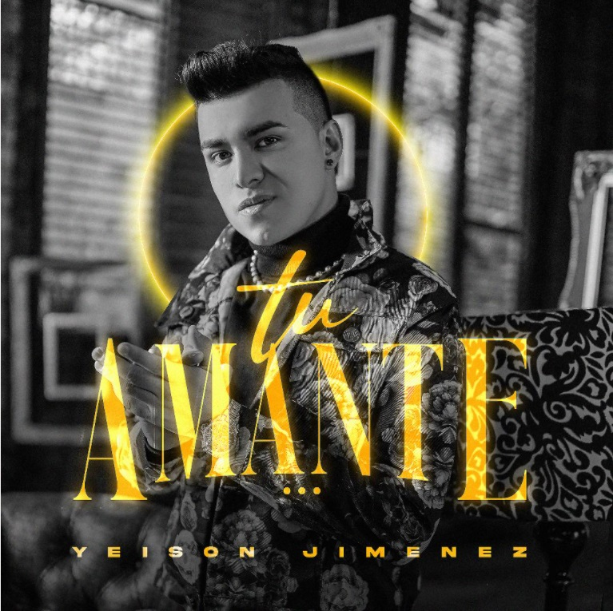

aventurero
no hay limites para los placeres y para derrochar amor y compartir con los amigos
berraco
se refiere a la actitud de querer salir adelante siempre y adaptarse a los malos momentos para cambiarlos

el amante
Le canta a esas parejas que se desean, es una canción muy sensual, es una canción que tú la escuchas y te produce la sensación que te está coqueteando, como que te están hablando al oído. Una canción hecha para las mujeres